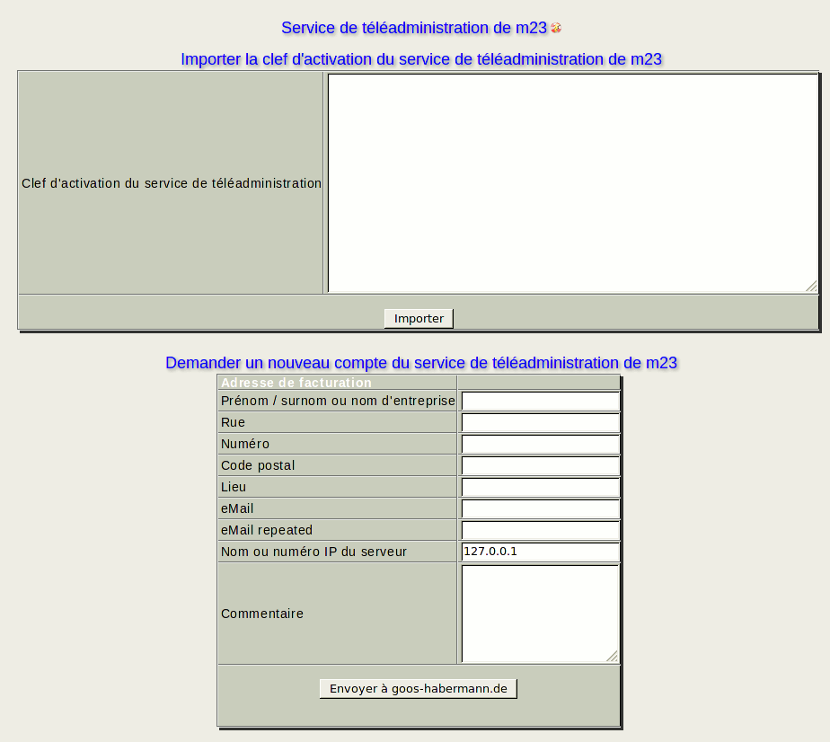

Le service de téléadministration de m23 est un service payant fourni par goos-habermann.de, où le support de goos-habermann.de peut avoir accès a votre (vos) serveur(s) m23 afin de vous aider avec vos tâches administratives. Vous trouverez plus d'informations sur le service de téléadministration de m23 et sur nos tarifs et conditions générales sur goos-habermann.de.

Sous-sections
root
2015-04-30